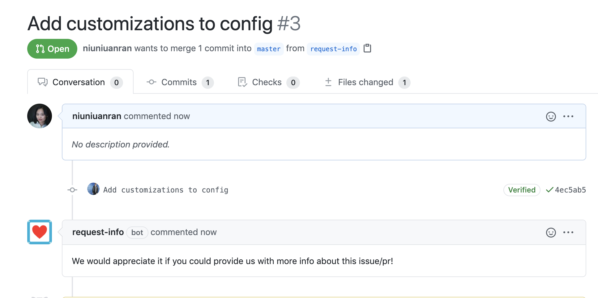

I was taking the Microsoft Module: Automate DevOps processes by using GitHub Apps, which comes with an interactive GitHub Learning Lab. It is an interesting experience getting started with using GitHub Apps to enhance the team’s GitHub experiences.
Probot is where a wide range of GitHub apps could be found and installed.
Once installed, GitHub Apps acts like a “user” that conduct jobs on their own behalf.
GitHub Apps facilitate continuous integration. It could use webhook or poll patterns, but webhook is prefered.
Smee.io is a webhook payload delivery service.
Configure webhook and GitHub App
This is the initial behaviour of the Request info GitHub app:
The Request info requires the /.github/config.yml for configuration.
This blank issue is a demo of how the customised request info behaves.
GitHub APIs and Webhooks
GitHub APIs and Webhooks go hand in hand, but the distinction between them is important.
- Webhooks are specific “noise” interpreters. They listen for specific events to occur as their trigger.
- When an event is triggered, the vastly more detailed GitHub API gives the bot an excessive amount of information (as a payload). The bot takes this payload, alters it slightly, and hands it back to GitHub’s API, which delivers the change back to your repository.
- The GitHub API can send information that makes changes to the platform, but only when prompted via webhook.
- The GitHub API and GitHub’s webhooks are both key components of GitHub Apps.
ToDo
Read this article: Scalable Continuous Integration (CI) Patterns, it looks interesting!